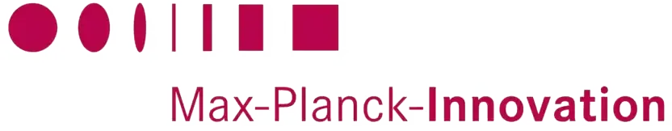
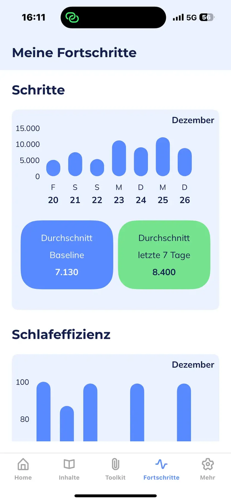

Application de prévention pour iPhone et objets connectés
Actif pour votre santé mentale !
actiself vous aide à mieux gérer le stress, vous montre comment vous protéger de la surcharge et vous motive à devenir plus actif et à bouger davantage.

Développé par des expert·e·s de l’Institut Max-Planck de psychiatrie
À qui s’adresse actiself ?
Quand le stress au travail ne retombe plus.
Un stress élevé et chronique peut entraîner de graves problèmes de santé, comme le burn-out, voire la dépression. Le manque d’activité physique est un facteur de risque supplémentaire et pèse aussi sur votre santé mentale.
Grâce à un programme de plusieurs semaines, actiself vous aide à mieux gérer le stress, à bouger davantage et à devenir plus actif. Vous pouvez ainsi vous protéger de la surcharge et prévenir les problèmes de santé qui en découlent.
actiself vous accompagne dans ces quatre domaines :
Comment fonctionne actiself ?
Un petit pas chaque jour – avec votre montre connectée.



Efficacité
Une étude montre nettement moins de symptômes dépressifs.
Dans l’étude SMART de l’Institut Max-Planck de psychiatrie, l’intervention par montre connectée sur laquelle repose actiself a été testée pendant 12 semaines.
Résultat : à la fin, les participant·e·s ayant suivi l’intervention présentaient significativement moins de symptômes dépressifs que le groupe témoin sans intervention – 9,8 au lieu de 13,9 points au questionnaire reconnu PHQ-9.
Étude pilote avec 52 participant·e·s, publiée sur medRxiv. Une étude randomisée de plus grande ampleur suivra.
Bien démarrer
En quatre étapes simples
- 1
Télécharger l’app
Téléchargez actiself depuis l’App Store d’Apple. L’application watchOS s’installe automatiquement.
- 2
S’inscrire
Inscrivez-vous avec une adresse e-mail et un mot de passe.
- 3
Confirmer
Saisissez le code que vous recevez par e-mail.
- 4
Activer
Saisissez votre code d’activation acheté dans notre boutique – et c’est parti !

Fondé sur la science
Issu de la recherche de l’Institut Max-Planck de psychiatrie
L’application actiself est le fruit de plusieurs années de recherche et de développement menées par des scientifiques de l’Institut Max-Planck de psychiatrie à Munich. En janvier 2025, Biomentric a lancé sa première application, actiself.
Devenez actif pour votre santé mentale !
Des questions ? Écrivez-nous à support@biomentric.zohodesk.eu ou consultez la FAQ.